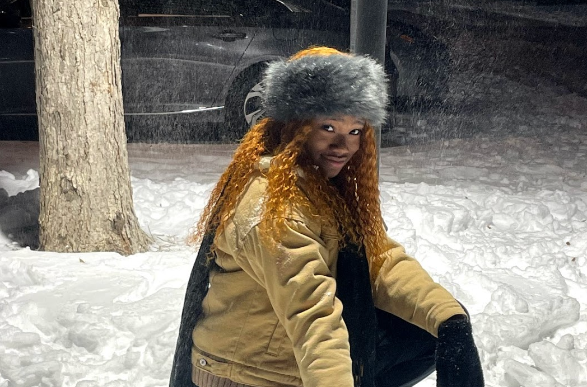
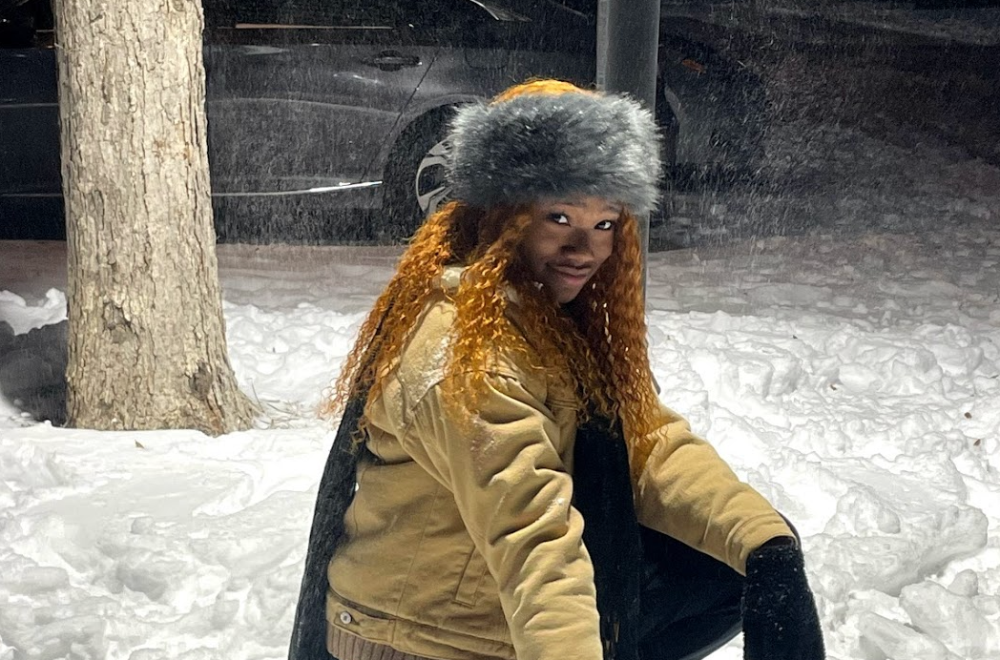

ABOUT ME
I am a first-year at the University of Texas at Austin and plan on majoring in Management Information Systems with a Bridge Discipline Certificate in Digital Arts and Media. I was born in Lagos, Nigerian and grew up in Houston, TX with my parents and two older brothers. I love my family, friends, canoeing, and graphic design!

I can usually be found at a coffeeshop, somewhere outside on campus, or, from time-to-time, running around in Disney World. My favorite foods include Pirate's Booty (it's good, trust me) and pasta, and I could probably survive on cold brew coffee. The way to my heart is a classic chocolate milkshake or a random trip to Target!
My Favorite Website
Click Here to go to my YouTube channel!